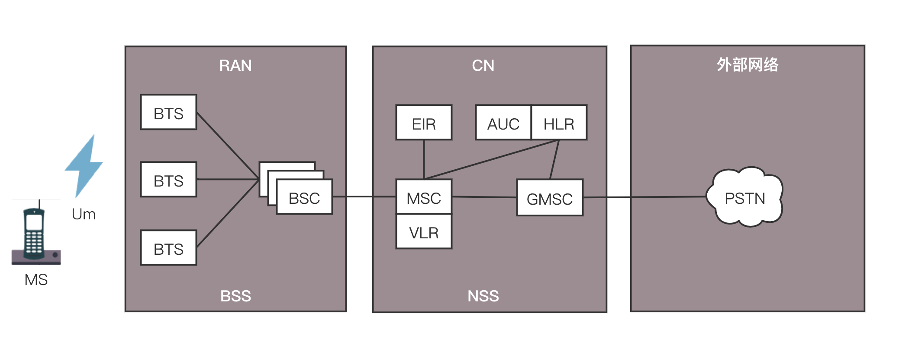
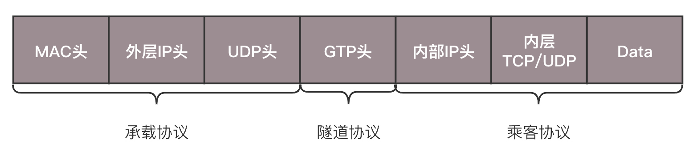

- 00 开篇词 想成为技术牛人？先搞定网络协议！.md
- 01 为什么要学习网络协议？.md
- 02 网络分层的真实含义是什么？.md
- 03 ifconfig：最熟悉又陌生的命令行.md
- 04 DHCP与PXE：IP是怎么来的，又是怎么没的？.md
- 05 从物理层到MAC层：如何在宿舍里自己组网玩联机游戏？.md
- 06 交换机与VLAN：办公室太复杂，我要回学校.md
- 07 ICMP与ping：投石问路的侦察兵.md
- 08 世界这么大，我想出网关：欧洲十国游与玄奘西行.md
- 09 路由协议：西出网关无故人，敢问路在何方.md
- 10 UDP协议：因性善而简单，难免碰到“城会玩”.md
- 11 TCP协议（上）：因性恶而复杂，先恶后善反轻松.md
- 12 TCP协议（下）：西行必定多妖孽，恒心智慧消磨难.md
- 13 套接字Socket：Talk is cheap, show me the code.md
- 14 HTTP协议：看个新闻原来这么麻烦.md
- 15 HTTPS协议：点外卖的过程原来这么复杂.md
- 16 流媒体协议：如何在直播里看到美女帅哥？.md
- 17 P2P协议：我下小电影，99%急死你.md
- 18 DNS协议：网络世界的地址簿.md
- 19 HttpDNS：网络世界的地址簿也会指错路.md
- 20 CDN：你去小卖部取过快递么？.md
- 21 数据中心：我是开发商，自己拿地盖别墅.md
- 22 VPN：朝中有人好做官.md
- 23 移动网络：去巴塞罗那，手机也上不了脸书.md
- 24 云中网络：自己拿地成本高，购买公寓更灵活.md
- 25 软件定义网络：共享基础设施的小区物业管理办法.md
- 26 云中的网络安全：虽然不是土豪，也需要基本安全和保障.md
- 27 云中的网络QoS：邻居疯狂下电影，我该怎么办？.md
- 28 云中网络的隔离GRE、VXLAN：虽然住一个小区，也要保护隐私.md
- 29 容器网络：来去自由的日子，不买公寓去合租.md
- 30 容器网络之Flannel：每人一亩三分地.md
- 31 容器网络之Calico：为高效说出善意的谎言.md
- 32 RPC协议综述：远在天边，近在眼前.md
- 33 基于XML的SOAP协议：不要说NBA，请说美国职业篮球联赛.md
- 34 基于JSON的RESTful接口协议：我不关心过程，请给我结果.md
- 35 二进制类RPC协议：还是叫NBA吧，总说全称多费劲.md
- 36 跨语言类RPC协议：交流之前，双方先来个专业术语表.md
- 37 知识串：用双十一的故事串起碎片的网络协议（上）.md
- 38 知识串：用双十一的故事串起碎片的网络协议（中）.md
- 39 知识串：用双十一的故事串起碎片的网络协议（下）.md
- 40 搭建一个网络实验环境：授人以鱼不如授人以渔.md
- 加餐1 创作故事：我是如何创作“趣谈网络协议”专栏的？.md
- 协议专栏特别福利 答疑解惑1期.md
- 协议专栏特别福利 答疑解惑2期.md
- 协议专栏特别福利 答疑解惑3期.md
- 协议专栏特别福利 答疑解惑4期.md
- 协议专栏特别福利 答疑解惑5期.md
- 结束语 放弃完美主义，执行力就是限时限量认真完成.md
23 移动网络：去巴塞罗那，手机也上不了脸书
前面讲的都是电脑上网的场景，那使用手机上网有什么不同呢？
移动网络的发展历程
你一定知道手机上网有2G、3G、4G的说法，究竟这都是什么意思呢？有一个通俗的说法就是：用2G看txt，用3G看jpg，用4G看avi。
2G网络
手机本来是用来打电话的，不是用来上网的，所以原来在2G时代，上网使用的不是IP网络，而是电话网络，走模拟信号，专业名称为公共交换电话网（PSTN，Public Switched Telephone Network）。
那手机不连网线，也不连电话线，它是怎么上网的呢？
手机是通过收发无线信号来通信的，专业名称是Mobile Station，简称MS，需要嵌入SIM。手机是客户端，而无线信号的服务端，就是基站子系统（BSS，Base Station SubsystemBSS）。至于什么是基站，你可以回想一下，你在爬山的时候，是不是看到过信号塔？我们平时城市里面的基站比较隐蔽，不容易看到，所以只有在山里才会注意到。正是这个信号塔，通过无线信号，让你的手机可以进行通信。
但是你要知道一点，无论无线通信如何无线，最终还是要连接到有线的网络里。前面讲[数据中心]的时候我也讲过，电商的应用是放在数据中心的，数据中心的电脑都是插着网线的。
因而，基站子系统分两部分，一部分对外提供无线通信，叫作基站收发信台（BTS，Base Transceiver Station），另一部分对内连接有线网络，叫作基站控制器（BSC，Base Station Controller）。基站收发信台通过无线收到数据后，转发给基站控制器。
这部分属于无线的部分，统称为无线接入网（RAN，Radio Access Network）。
基站控制器通过有线网络，连接到提供手机业务的运营商的数据中心，这部分称为核心网（CN，Core Network）。核心网还没有真的进入互联网，这部分还是主要提供手机业务，是手机业务的有线部分。
首先接待基站来的数据的是移动业务交换中心（MSC，Mobile Service Switching Center），它是进入核心网的入口，但是它不会让你直接连接到互联网上。
因为在让你的手机真正进入互联网之前，提供手机业务的运营商，需要认证是不是合法的手机接入。你别自己造了一张手机卡，就连接上来。鉴权中心（AUC，Authentication Center）和设备识别寄存器（EIR，Equipment Identity Register）主要是负责安全性的。
另外，需要看你是本地的号，还是外地的号，这个牵扯到计费的问题，异地收费还是很贵的。访问位置寄存器（VLR，Visit Location Register）是看你目前在的地方，归属位置寄存器（HLR，Home Location Register）是看你的号码归属地。
当你的手机卡既合法又有钱的时候，才允许你上网，这个时候需要一个网关，连接核心网和真正的互联网。网关移动交换中心（GMSC ，Gateway Mobile Switching Center）就是干这个的，然后是真正的互连网。在2G时代，还是电话网络PSTN。
数据中心里面的这些模块统称为网络子系统（NSS，Network and Switching Subsystem）。

因而2G时代的上网如图所示，我们总结一下，有这几个核心点：
-
手机通过无线信号连接基站；
-
基站一面朝前接无线，一面朝后接核心网；
-
核心网一面朝前接到基站请求，一是判断你是否合法，二是判断你是不是本地号，还有没有钱，一面通过网关连接电话网络。
2.5G网络
后来从2G到了2.5G，也即在原来电路交换的基础上，加入了分组交换业务，支持Packet的转发，从而支持IP网络。
在上述网络的基础上，基站一面朝前接无线，一面朝后接核心网。在朝后的组件中，多了一个分组控制单元（PCU，Packet Control Unit），用以提供分组交换通道。
在核心网里面，有个朝前的接待员（SGSN，Service GPRS Supported Node）和朝后连接IP网络的网关型GPRS支持节点（GGSN，Gateway GPRS Supported Node）。

3G网络
到了3G时代，主要是无线通信技术有了改进，大大增加了无线的带宽。
以W-CDMA为例，理论最高2M的下行速度，因而基站改变了，一面朝外的是Node B，一面朝内连接核心网的是无线网络控制器（RNC，Radio Network Controller）。核心网以及连接的IP网络没有什么变化。
4G网络
然后就到了今天的4G网络，基站为eNodeB，包含了原来Node B和RNC的功能，下行速度向百兆级别迈进。另外，核心网实现了控制面和数据面的分离，这个怎么理解呢？
在前面的核心网里面，有接待员MSC或者SGSN，你会发现检查是否合法是它负责，转发数据也是它负责，也即控制面和数据面是合二为一的，这样灵活性比较差，因为控制面主要是指令，多是小包，往往需要高的及时性；数据面主要是流量，多是大包，往往需要吞吐量。
于是有了下面这个架构。

HSS用于存储用户签约信息的数据库，其实就是你这个号码归属地是哪里的，以及一些认证信息。
MME是核心控制网元，是控制面的核心，当手机通过eNodeB连上的时候，MME会根据HSS的信息，判断你是否合法。如果允许连上来，MME不负责具体的数据的流量，而是MME会选择数据面的SGW和PGW，然后告诉eNodeB，我允许你连上来了，你连接它们吧。
于是手机直接通过eNodeB连接SGW，连上核心网，SGW相当于数据面的接待员，并通过PGW连到IP网络。PGW就是出口网关。在出口网关，有一个组件PCRF，称为策略和计费控制单元，用来控制上网策略和流量的计费。
4G网络协议解析
我们来仔细看一下4G网络的协议，真的非常复杂。我们将几个关键组件放大来看。
控制面协议
其中虚线部分是控制面的协议。当一个手机想上网的时候，先要连接eNodeB，并通过S1-MME接口，请求MME对这个手机进行认证和鉴权。S1-MME协议栈如下图所示。
UE就是你的手机，eNodeB还是两面派，朝前对接无线网络，朝后对接核心网络，在控制面对接的是MME。
eNodeB和MME之间的连接就是很正常的IP网络，但是这里面在IP层之上，却既不是TCP，也不是UDP，而是SCTP。这也是传输层的协议，也是面向连接的，但是更加适合移动网络。 它继承了TCP较为完善的拥塞控制并改进TCP的一些不足之处。
SCTP的第一个特点是多宿主。一台机器可以有多个网卡，而对于TCP连接来讲，虽然服务端可以监听0.0.0.0，也就是从哪个网卡来的连接都能接受，但是一旦建立了连接，就建立了四元组，也就选定了某个网卡。
SCTP引入了联合（association）的概念，将多个接口、多条路径放到一个联合中来。当检测到一条路径失效时，协议就会通过另外一条路径来发送通信数据。应用程序甚至都不必知道发生了故障、恢复，从而提供更高的可用性和可靠性。
SCTP的第二个特点是将一个联合分成多个流。一个联合中的所有流都是独立的，但均与该联合相关。每个流都给定了一个流编号，它被编码到SCTP报文中，通过联合在网络上传送。在TCP的机制中，由于强制顺序，导致前一个不到达，后一个就得等待，SCTP的多个流不会相互阻塞。
SCTP的第三个特点是四次握手，防止SYN攻击。在TCP中是三次握手，当服务端收到客户的SYN之后，返回一个SYN-ACK之前，就建立数据结构，并记录下状态，等待客户端发送ACK的ACK。当恶意客户端使用虚假的源地址来伪造大量SYN报文时，服务端需要分配大量的资源，最终耗尽资源，无法处理新的请求。
SCTP可以通过四次握手引入Cookie的概念，来有效地防止这种攻击的产生。在SCTP中，客户机使用一个INIT报文发起一个连接。服务器使用一个INIT-ACK报文进行响应，其中就包括了Cookie。然后客户端就使用一个COOKIE-ECHO报文进行响应，其中包含了服务器所发送的Cookie。这个时候，服务器为这个连接分配资源，并通过向客户机发送一个COOKIE-ACK报文对其进行响应。
SCTP的第四个特点是将消息分帧。TCP是面向流的，也即发送的数据没头没尾，没有明显的界限。这对于发送数据没有问题，但是对于发送一个个消息类型的数据，就不太方便。有可能客户端写入10个字节，然后再写入20个字节。服务端不是读出10个字节的一个消息，再读出20个字节的一个消息，而有可能读入25个字节，再读入5个字节，需要业务层去组合成消息。
SCTP借鉴了UDP的机制，在数据传输中提供了消息分帧功能。当一端对一个套接字执行写操作时，可确保对等端读出的数据大小与此相同。
SCTP的第五个特点是断开连接是三次挥手。在TCP里面，断开连接是四次挥手，允许另一端处于半关闭的状态。SCTP选择放弃这种状态，当一端关闭自己的套接字时，对等的两端全部需要关闭，将来任何一端都不允许再进行数据的移动了。
当MME通过认证鉴权，同意这个手机上网的时候，需要建立一个数据面的数据通路。建立通路的过程还是控制面的事情，因而使用的是控制面的协议GTP-C。
建设的数据通路分两段路，其实是两个隧道。一段是从eNodeB到SGW，这个数据通路由MME通过S1-MME协议告诉eNodeB，它是隧道的一端，通过S11告诉SGW，它是隧道的另一端。第二端是从SGW到PGW，SGW通过S11协议知道自己是其中一端，并主动通过S5协议，告诉PGW它是隧道的另一端。
GTP-C协议是基于UDP的，这是[UDP的“城会玩”]中的一个例子。如果看GTP头，我们可以看到，这里面有隧道的ID，还有序列号。

通过序列号，不用TCP，GTP-C自己就可以实现可靠性，为每个输出信令消息分配一个依次递增的序列号，以确保信令消息的按序传递，并便于检测重复包。对于每个输出信令消息启动定时器，在定时器超时前未接收到响应消息则进行重发。
数据面协议
当两个隧道都打通，接在一起的时候，PGW会给手机分配一个IP地址，这个IP地址是隧道内部的IP地址，可以类比为IPsec协议里面的IP地址。这个IP地址是归手机运营商管理的。然后，手机可以使用这个IP地址，连接eNodeB，从eNodeB经过S1-U协议，通过第一段隧道到达SGW，再从SGW经过S8协议，通过第二段隧道到达PGW，然后通过PGW连接到互联网。
数据面的协议都是通过GTP-U，如图所示。

手机每发出的一个包，都由GTP-U隧道协议封装起来，格式如下。

和IPsec协议很类似，分为乘客协议、隧道协议、承载协议。其中乘客协议是手机发出来的包，IP是手机的IP，隧道协议里面有隧道ID，不同的手机上线会建立不同的隧道，因而需要隧道ID来标识。承载协议的IP地址是SGW和PGW的IP地址。
手机上网流程
接下来，我们来看一个手机开机之后上网的流程，这个过程称为Attach。可以看出来，移动网络还是很复杂的。因为这个过程要建立很多的隧道，分配很多的隧道ID，所以我画了一个图来详细说明这个过程。
-
手机开机以后，在附近寻找基站eNodeB，找到后给eNodeB发送Attach Request，说“我来啦，我要上网”。
-
eNodeB将请求发给MME，说“有个手机要上网”。
-
MME去请求手机，一是认证，二是鉴权，还会请求HSS看看有没有钱，看看是在哪里上网。
-
当MME通过了手机的认证之后，开始分配隧道，先告诉SGW，说要创建一个会话（Create Session）。在这里面，会给SGW分配一个隧道ID t1，并且请求SGW给自己也分配一个隧道ID。
-
SGW转头向PGW请求建立一个会话，为PGW的控制面分配一个隧道ID t2，也给PGW的数据面分配一个隧道ID t3，并且请求PGW给自己的控制面和数据面分配隧道ID。
-
PGW回复SGW说“创建会话成功”，使用自己的控制面隧道ID t2，回复里面携带着给SGW控制面分配的隧道ID t4和控制面的隧道ID t5，至此SGW和PGW直接的隧道建设完成。双方请求对方，都要带着对方给自己分配的隧道ID，从而标志是这个手机的请求。
-
接下来SGW回复MME说“创建会话成功”，使用自己的隧道ID t1访问MME，回复里面有给MME分配隧道ID t6，也有SGW给eNodeB分配的隧道ID t7。
-
当MME发现后面的隧道都建设成功之后，就告诉eNodeB，“后面的隧道已经建设完毕，SGW给你分配的隧道ID是t7，你可以开始连上来了，但是你也要给SGW分配一个隧道ID”。
-
eNodeB告诉MME自己给SGW分配一个隧道，ID为t8。
-
MME将eNodeB给SGW分配的隧道ID t8告知SGW，从而前面的隧道也建设完毕。
这样，手机就可以通过建立的隧道成功上网了。
异地上网问题
接下来我们考虑异地上网的事情。
为什么要分SGW和PGW呢，一个GW不可以吗？SGW是你本地的运营商的设备，而PGW是你所属的运营商的设备。
如果你在巴塞罗那，一下飞机，手机开机，周围搜寻到的肯定是巴塞罗那的eNodeB。通过MME去查询国内运营商的HSS，看你是否合法，是否还有钱。如果允许上网，你的手机和巴塞罗那的SGW会建立一个隧道，然后巴塞罗那的SGW和国内运营商的PGW建立一个隧道，然后通过国内运营商的PGW上网。

因此，判断你是否能上网的是国内运营商的HSS，控制你上网策略的是国内运营商的PCRF，给手机分配的IP地址也是国内运营商的PGW负责的，给手机分配的IP地址也是国内运营商里统计的。运营商由于是在PGW里面统计的，这样你的上网流量全部通过国内运营商即可，只不过巴塞罗那运营商也要和国内运营商进行流量结算。
由于你的上网策略是由国内运营商在PCRF中控制的，因而你还是上不了脸书。
小结
好了，这一节就到这里了，我们来总结一下：
-
移动网络的发展历程从2G到3G，再到4G，逐渐从打电话的功能为主，向上网的功能为主转变；
-
请记住4G网络的结构，有eNodeB、MME、SGW、PGW等，分控制面协议和数据面协议，你可以对照着结构，试着说出手机上网的流程；
-
即便你在国外的运营商下上网，也是要通过国内运营商控制的，因而也上不了脸书。
最后，给你留两个思考题：
-
咱们上网都有套餐，有交钱多的，有交钱少的，你知道移动网络是如何控制不同优先级的用户的上网流量的吗？
-
前面讲过的所有的网络都是基于物理机的，随着云计算兴起，无论是电商，还是移动网络都要部署在云中了，你知道云中网络的设计有哪些要点吗？
我们的专栏更新到第23讲，不知你掌握得如何？每节课后我留的思考题，你都有没有认真思考，并在留言区写下答案呢？我会从已发布的文章中选出一批认真留言的同学，赠送学习奖励礼券和我整理的独家网络协议知识图谱。
欢迎你留言和我讨论。趣谈网络协议，我们下期见！
© 2019 - 2023 Liangliang Lee. Powered by Vert.x and hexo-theme-book.